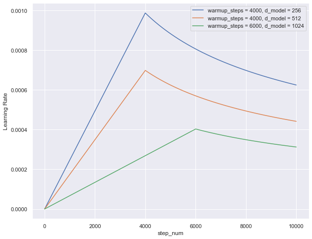
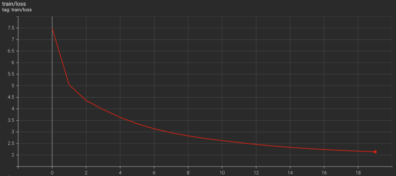
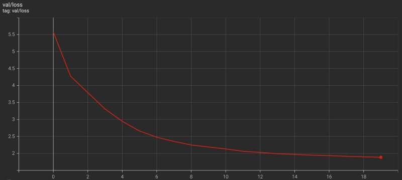

Transformer Training Details
Optimizer, Scheduler, Loss Function

The previous article discussed the implementation of a data loader for training a model based on the transformer architecture from Attention Is All You Need by Ashish Vaswani et al.
This article discusses Transformer training details with the following details:
- Adam Optimizer
- Learning Rate Scheduler
- Cross-Entropy Loss With Label Smoothing
- Transformer Training Loop & Results
1 Adam Optimizer
In section 5.3 of the paper, they mentioned that they used the Adam optimizer with the following parameters:
\[ \begin{aligned} \beta_1 &= 0.9 \\ \beta_2 &= 0.98 \\ \epsilon &= 10^{-9} \end{aligned} \]
from torch.optim import Adam
optimizer = Adam(model.parameters(),
betas = (0.9, 0.98),
eps = 1.0e-9)There is no surprise here except that we didn’t explicitly specify the learning rate (the default is 0.001).
2 Learning Rate Scheduler
In section 5.3 of the paper, they explained how to vary the learning rate throughout training:
\[ \text{learning\_rate} = \dfrac{1}{\sqrt{d_\text{model}}} \cdot \min \left( \dfrac{1}{\sqrt{\text{step\_num}}},\ \text{step\_num} \cdot \dfrac{1}{\text{warmup\_steps}^{\frac{3}{2}}} \right) \]
The first observation is that the learning rate is lower as the number of embedding vector dimensions is larger. It makes sense to reduce the learning rate when adjusting more parameters.
The second observation is that two terms within the brackets become the same value when the training step number step_num reaches the warmup steps warmup_steps.
\[ \begin{aligned} \text{step\_num} &\rightarrow \text{warmup\_steps} \\ \dfrac{1}{\sqrt{\text{step\_num}}} &\rightarrow \dfrac{1}{\sqrt{\text{warmup\_steps}}} \\ \text{step\_num} \cdot \dfrac{1}{\text{warmup\_steps}^\frac{3}{2}} &\rightarrow \dfrac{\text{warmup\_steps}}{\text{warmup\_steps}^\frac{3}{2}} = \dfrac{1}{\sqrt{\text{warmup\_steps}}} \end{aligned} \]
So, the learning rate linearly increases until the training step hits the warmup steps (the second term). Then, it decreases due to the inverse square root of the step number (the first term).
We can use a Python function to calculate the learning rate:
# Learning rate caculation: step_num starts with 1
def calc_lr(step, dim_embed, warmup_steps):
return dim_embed**(-0.5) * min(step**(-0.5), \
step * warmup_steps**(-1.5))
As we can see, the learning rate is lower as the number of embedding vector dimensions dim_embed is larger. As expected, the learning rate peaks when the step_num is at warmup_steps, and the larger warmup_steps is, the lower the learning rate at the peak.
The learning rate starts very small during the warmup period and increases linearly. The paper doesn’t mention the reason for this learning rate schedule. Still, I guess they found the training unstable during the initial steps and empirically decided to use warmup_steps=4000 for the base transformer training.
I implemented a learning rate scheduler as follows:
from torch.optim import Optimizer
from torch.optim.lr_scheduler import _LRScheduler
class Scheduler(_LRScheduler):
def __init__(self,
optimizer: Optimizer,
dim_embed: int,
warmup_steps: int,
last_epoch: int=-1,
verbose: bool=False) -> None:
self.dim_embed = dim_embed
self.warmup_steps = warmup_steps
self.num_param_groups = len(optimizer.param_groups)
super().__init__(optimizer, last_epoch, verbose)
def get_lr(self) -> float:
lr = calc_lr(self._step_count, self.dim_embed, self.warmup_steps)
return [lr] * self.num_param_groups
def calc_lr(step, dim_embed, warmup_steps):
return dim_embed**(-0.5) * min(step**(-0.5), step * warmup_steps**(-1.5))3 Cross-Entropy Loss With Label Smoothing
We use the cross-entropy loss to calculate the loss value since predicting the next token ID is a classification problem.
import torch.nn as nn
loss_func = nn.CrossEntropyLoss( ignore_index = PAD_IDX,
label_smoothing = 0.1 )ignore_index = PAD_IDXmeans the loss calculation ignores where label token indices are for padding, regardless of what the model predicts.label_smoothing = 0.1means we are using label smoothing, which is a way to prevent a model from being too confident about its prediction:- Cross-entropy loss without label smoothing assumes there is only one correct choice of the token. The loss is negative-log-likelihood
nll, where the label token index has 100% weight like one-hot encoding. - However, there could be multiple token choices with different probabilities. So, instead of 100% weight, we assign the weight
1.0 — label_smoothigto the label token index and distribute the remaining weightlabel_smoothingacross all the token indices:distribution = label_smoothing / vocab_size. In other words, we add a small possibility (of being a correct label) to all token indices. - We calculate the sum of negative-log-softmax across all the token indices
-log_softmaxand multiply it by the distribution.
- Cross-entropy loss without label smoothing assumes there is only one correct choice of the token. The loss is negative-log-likelihood
So, we calculate a loss with label smoothing as follows:
distribution = label_smoothing / vocab_size
loss = (1.0 - label_smoothing) * nll - distribution * log_softmaxFor label_smoothing = 0.1, the loss becomes:
loss = 0.9 * nll - 0.1 / vocab_size * log_softmaxNote: for both nll and log_softmax we ignore loss where the label is PAD_IDX.
Thankfully, PyTorch nn.CrossEntropyLoss supports both ignoring padding and handling label smoothing.
When we use the nn.CrossEntropyLoss, we need to flatten the model outputs and label token indices. So, I wrote the following wrapper module:
import torch
import torch.nn as nn
from torch import Tensor
class TranslationLoss(nn.Module):
def __init__(self, label_smoothing: float=0.0) -> None:
super().__init__()
self.loss_func = nn.CrossEntropyLoss(ignore_index = PAD_IDX,
label_smoothing = label_smoothing)
def forward(self, logits: Tensor, labels: Tensor) -> Tensor:
vocab_size = logits.shape[-1]
logits = logits.reshape(-1, vocab_size)
labels = labels.reshape(-1).long()
return self.loss_func(logits, labels)According to the paper, the use of label smoothing improved the BLEU score:
During training, we employed label smoothing of value ls = 0.1 [36]. This hurts perplexity, as the model learns to be more unsure, but improves accuracy and BLEU score. Attention is All You Need
For details of the BLEU score, please look at this article.
4 Transformer Training Loop
The following code handles one epoch during training:
def train(model: nn.Module,
loader: DataLoader,
loss_func: torch.nn.Module,
optimizer: torch.optim.Optimizer,
scheduler: torch.optim.lr_scheduler._LRScheduler) -> float:
model.train() # train mode
total_loss = 0
num_batches = len(loader)
for source, target, labels, source_mask, target_mask in loader:
# feed forward
logits = model(source, target, source_mask, target_mask)
# loss calculation
loss = loss_func(logits, labels)
total_loss += loss.item()
# back-prop
optimizer.zero_grad()
loss.backward()
optimizer.step()
# learning rate scheduler
if scheduler is not None:
scheduler.step()
# average training loss
avg_loss = total_loss / num_batches
return avg_lossWe load the training dataset with split = 'train' and pass it to the train function. Please look at this article for the details of the data loader.
For evaluation, we set the model to the eval mode by model.eval(), and also, we don’t need gradients as we have no optimization step.
We load the validation dataset with split = 'valid' and pass it to the validate function.
def validate(model: nn.Module,
loader: DataLoader,
loss_func: torch.nn.Module) -> float:
model.eval() # eval mode
total_loss = 0
num_batches = len(loader)
for source, target, labels, source_mask, target_mask in loader:
with torch.no_grad():
# feed forward
logits = model(source, target, source_mask, target_mask)
# loss calculation
loss = loss_func(logits, labels)
total_loss += loss.item()
# average validation loss
avg_loss = total_loss / num_batches
return avg_loss5 Transformer Training Results
I set up a smaller version of the Transformer than the original base model.
model:
name: Transformer
max_positions: 5000 # Positional encoding
num_blocks: 2 # Encoder and decoder layers
num_heads: 8 # Multi-head attention
dim_embed: 128 # Embedding vector dimensions
dim_pffn: 512 # Position-wise feed-forward
drop_prob: 0.3 # Drop outSince the dataset (Multi30k for German-to-English translation) is relatively small, I reduced the network parameters and used a higher drop probability to prevent over-fitting from happening.
And I did a Transformer training with the following setup:
epochs: 20
batch_size: 32
optimizer:
name: torch.optim.Adam
betas:
- 0.9
- 0.98
eps: 1.0e-9
scheduler:
name: Scheduler
dim_embed: 128
warmup_steps: 10000
loss:
name: TranslationLoss
label_smoothing: 0.1
val_loss:
name: TranslationLoss
label_smoothing: 0.0 # no label smoothing for validationI used relatively large warmup steps to keep the learning rate lower.
The Transformer training finished less than 6 hours on a Linux machine with 4 CPUs (Intel Core i7–7700K @ 4.20GHz) and two GPUs (NVIDIA GeForce GTX 1080 Ti).


I could’ve run it longer, but it was enough to prove the model is learning.
I implemented a translator class and tested with the test dataset from Multi30k. Some good examples are shown below (Input, Label, and the model’s prediction):
German : Die Person im gestreiften Hemd klettert auf einen Berg. English : The person in the striped shirt is mountain climbing. Translation: The person in the striped shirt is climbing a mountain.
German : Ein junges Mädchen schwimmt in einem Pool English : A young girl swimming in a pool Translation: A young girl swimming in a pool.
German : Eine Frau, die in einer Küche eine Schale mit Essen hält. English : A woman holding a bowl of food in a kitchen. Translation: A woman holding a bowl of food in a kitchen.
Below are some examples of bad Translations:
German : Drei Leute sitzen in einer Höhle. English : Three people sit in a cave. Translation: Three people are sitting in an indoor pool.
German : Leute Reparieren das Dach eines Hauses. English : People are fixing the roof of a house. Translation: People riding the roof of a house.
German : Ein Boston Terrier läuft über saftig-grünes Gras vor einem weißen Zaun. English : A Boston Terrier is running on lush green grass in front of a white fence. Translation: A rodeo athlete runs across the grass.
I’ll write about the translator in the next article
6 References
- The Annotated Transformer
Harvard NLP - Rethinking the inception architecture for computer vision
Christian Szegedy, Vincent Vanhoucke, Sergey Ioffe, Jonathon Shlens, Zbigniew Wojna - Training Tips for the Transformer Model
Martin Popel, Ondřej Bojar - Attention Is All You Need
Ashish Vaswani, Noam Shazeer, Niki Parmar, Jakob Uszkoreit, Llion Jones, Aidan N. Gomez, Łukasz Kaiser, Illia Polosukhin